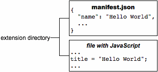

chrome.i18n
| Description: |
Use the chrome.i18n infrastructure to implement internationalization across your whole app or extension.
|
| Availability: |
Since Chrome 35.
|
| Content Scripts: |
Fully supported.
Learn more
|
You need to put all of its user-visible strings into a file
named messages.json.
Each time you add a new locale,
you add a messages file
under a directory
named _locales/localeCode,
where localeCode is a code such as
en for English.
Here's the file hierarchy
for an internationalized extension that supports
English (en),
Spanish (es), and
Korean (ko):
How to support multiple languages
Say you have an extension with the files shown in the following figure:
To internationalize this extension, you name each user-visible string and put it into a messages file. The extension's manifest, CSS files, and JavaScript code use each string's name to get its localized version.
Here's what the extension looks like when it's internationalized (note that it still has only English strings):

Important:
If an extension has a _locales directory,
the manifest
must define "default_locale".
Some notes about internationalizing:
You can use any of the supported locales. If you use an unsupported locale, Google Chrome ignores it.
-
In
manifest.jsonand CSS files, refer to a string named messagename like this:__MSG_messagename__
-
In your extension or app's JavaScript code,
refer to a string named messagename
like this:
chrome.i18n.getMessage("messagename") -
In each call to
getMessage(), you can supply up to 9 strings to be included in the message. See Examples: getMessage for details. Some messages, such as
@@bidi_dirand@@ui_locale, are provided by the internationalization system. See the Predefined messages section for a full list of predefined message names.-
In
messages.json, each user-visible string has a name, a "message" item, and an optional "description" item. The name is a key such as "extName" or "search_string" that identifies the string. The "message" specifies the value of the string in this locale. The optional "description" provides help to translators, who might not be able to see how the string is used in your extension. For example:{ "search_string": { "message": "hello%20world", "description": "The string we search for. Put %20 between words that go together." }, ... }For more information, see Formats: Locale-Specific Messages.
Once an extension or app is internationalized,
translating it is simple.
You copy messages.json,
translate it,
and put the copy into a new directory under _locales.
For example, to support Spanish,
just put a translated copy of messages.json
under _locales/es.
The following figure shows the previous extension
with a new Spanish translation.

Predefined messages
The internationalization system provides a few predefined
messages to help you localize.
These include @@ui_locale,
so you can detect the current UI locale,
and a few @@bidi_... messages
that let you detect the text direction.
The latter messages have similar names to constants in the
gadgets BIDI (bi-directional) API.
The special message @@extension_id
can be used in the CSS and JavaScript files,
whether or not the extension or app is localized.
This message doesn't work in manifest files.
The following table describes each predefined message.
| Message name | Description |
|---|---|
@@extension_id |
The extension or app ID;
you might use this string to construct URLs
for resources inside the extension.
Even unlocalized extensions can use this message.
Note: You can't use this message in a manifest file. |
@@ui_locale |
The current locale; you might use this string to construct locale-specific URLs. |
@@bidi_dir |
The text direction for the current locale, either "ltr" for left-to-right languages such as English or "rtl" for right-to-left languages such as Japanese. |
@@bidi_reversed_dir |
If the @@bidi_dir is "ltr", then this is "rtl";
otherwise, it's "ltr". |
@@bidi_start_edge |
If the @@bidi_dir is "ltr", then this is "left";
otherwise, it's "right". |
@@bidi_end_edge |
If the @@bidi_dir is "ltr", then this is "right";
otherwise, it's "left". |
Here's an example of using @@extension_id in a CSS file
to construct a URL:
body {
background-image:url('chrome-extension://__MSG_@@extension_id__/background.png');
}
If the extension ID is abcdefghijklmnopqrstuvwxyzabcdef, then the bold line in the previous code snippet becomes:
background-image:url('chrome-extension://abcdefghijklmnopqrstuvwxyzabcdef/background.png');
Here's an example of using @@bidi_* messages in a CSS file:
body {
direction: __MSG_@@bidi_dir__;
}
div#header {
margin-bottom: 1.05em;
overflow: hidden;
padding-bottom: 1.5em;
padding-__MSG_@@bidi_start_edge__: 0;
padding-__MSG_@@bidi_end_edge__: 1.5em;
position: relative;
}
For left-to-right languages such as English, the bold lines become:
dir: ltr;
padding-left: 0;
padding-right: 1.5em;
Locales
You can choose from many locales,
including some (such as en)
that let a single translation support multiple variations of a language
(such as en_GB and en_US).
Supported locales
You can use any of the locales that the Chrome Web Store supports.
Searching for messages
You don't have to define every string for every supported locale.
As long as the default locale's messages.json file
has a value for every string,
your extension or app will run no matter how sparse a translation is.
Here's how the extension system searches for a message:
-
Search the messages file (if any)
for the user's preferred locale.
For example, when Google Chrome's locale is set to
British English (
en_GB), the system first looks for the message in_locales/en_GB/messages.json. If that file exists and the message is there, the system looks no further. -
If the user's preferred locale has a region
(that is, the locale has an underscore: _),
search the locale without that region.
For example, if the
en_GBmessages file doesn't exist or doesn't contain the message, the system looks in theenmessages file. If that file exists and the message is there, the system looks no further. -
Search the messages file for the default locale.
For example, if the extension's "default_locale" is set to "es",
and neither
_locales/en_GB/messages.jsonnor_locales/en/messages.jsoncontains the message, the extension uses the message from_locales/es/messages.json.
In the following figure, the message named "colores" is in all three locales that the extension supports, but "extName" is in only two of the locales. Wherever a user running Google Chrome in US English sees the label "Colors", a user of British English sees "Colours". Both US English and British English users see the extension name "Hello World". Because the default language is Spanish, users running Google Chrome in any non-English language see the label "Colores" and the extension name "Hola mundo".

How to set your browser's locale
To test translations, you might want to set your browser's locale. This section tells you how to set the locale in Windows, Mac OS X, Linux, and Chrome OS.
Windows
You can change the locale using either a locale-specific shortcut or the Google Chrome UI. The shortcut approach is quicker, once you've set it up, and it lets you use several languages at once.
Using a locale-specific shortcut
To create and use a shortcut that launches Google Chrome with a particular locale:
- Make a copy of the Google Chrome shortcut that's already on your desktop.
- Rename the new shortcut to match the new locale.
-
Change the shortcut's properties
so that the Target field specifies the
--langand--user-data-dirflags. The target should look something like this:path_to_chrome.exe --lang=locale --user-data-dir=c:\locale_profile_dir
- Launch Google Chrome by double-clicking the shortcut.
For example, to create a shortcut
that launches Google Chrome in Spanish (es),
you might create a shortcut named chrome-es
that has the following target:
path_to_chrome.exe --lang=es --user-data-dir=c:\chrome-profile-es
You can create as many shortcuts as you like, making it easy to test in multiple languages. For example:
path_to_chrome.exe --lang=en --user-data-dir=c:\chrome-profile-en
path_to_chrome.exe --lang=en_GB --user-data-dir=c:\chrome-profile-en_GB
path_to_chrome.exe --lang=ko --user-data-dir=c:\chrome-profile-ko
Note:
Specifying --user-data-dir is optional but handy.
Having one data directory per locale
lets you run the browser
in several languages at the same time.
A disadvantage is that because the locales' data isn't shared,
you have to install your extension multiple times — once per locale,
which can be challenging when you don't speak the language.
For more information, see
Creating and Using Profiles.
Using the UI
Here's how to change the locale using the UI on Google Chrome for Windows:
- App icon > Options
- Choose the Under the Hood tab
- Scroll down to Web Content
- Click Change font and language settings
- Choose the Languages tab
- Use the drop down to set the Google Chrome language
- Restart Chrome
Mac OS X
To change the locale on Mac, you use the system preferences.
- From the Apple menu, choose System Preferences
- Under the Personal section, choose International
- Choose your language and location
- Restart Chrome
Linux
To change the locale on Linux, first quit Google Chrome. Then, all in one line, set the LANGUAGE environment variable and launch Google Chrome. For example:
LANGUAGE=es ./chrome
Chrome OS
To change the locale on Chrome OS:
- From the system tray, choose Settings.
- Under the Languages and input section, choose the Language dropdown.
- If your language is not listed, click Add languages and add it.
- Once added, click the the 3-dot More actions menu item next to your language and choose Display Chrome OS in this language.
- Click the Restart button that appears next to the set language to restart Chrome OS.
Examples
You can find simple examples of internationalization in the examples/api/i18n directory. For a complete example, see examples/extensions/news. For other examples and for help in viewing the source code, see Samples.
Examples: getMessage
The following code gets a localized message from the browser and displays it as a string. It replaces two placeholders within the message with the strings "string1" and "string2".
function getMessage() {
var message = chrome.i18n.getMessage("click_here", ["string1", "string2"]);
document.getElementById("languageSpan").innerHTML = message;
}
Here's how you'd supply and use a single string:
// In JavaScript code
status.innerText = chrome.i18n.getMessage("error", errorDetails);
"error": {
"message": "Error: $details$",
"description": "Generic error template. Expects error parameter to be passed in.",
"placeholders": {
"details": {
"content": "$1",
"example": "Failed to fetch RSS feed."
}
}
}
For more information about placeholders, see the
Locale-Specific Messages page.
For details on calling getMessage(), see the
API reference.
Example: getAcceptLanguages
The following code gets accept-languages from the browser and displays them as a string by separating each accept-language with ','.
function getAcceptLanguages() {
chrome.i18n.getAcceptLanguages(function(languageList) {
var languages = languageList.join(",");
document.getElementById("languageSpan").innerHTML = languages;
})
}
For details on calling getAcceptLanguages(), see the
API reference.
Example: detectLanguage
The following code detects up to 3 languages from the given string and displays the result as strings separated by new lines.
function detectLanguage(inputText) {
chrome.i18n.detectLanguage(inputText, function(result) {
var outputLang = "Detected Language: ";
var outputPercent = "Language Percentage: ";
for(i = 0; i < result.languages.length; i++) {
outputLang += result.languages[i].language + " ";
outputPercent +=result.languages[i].percentage + " ";
}
document.getElementById("languageSpan").innerHTML = outputLang + "\n" + outputPercent + "\nReliable: " + result.isReliable;
});
}
For more details on calling detectLanguage(inputText), see the API reference.
Summary
| Types | |
|---|---|
| LanguageCode | |
| Methods | |
getAcceptLanguages −
chrome.i18n.getAcceptLanguages(function callback)
| |
getMessage −
string
chrome.i18n.getMessage(string messageName, any substitutions, object options)
| |
getUILanguage −
string
chrome.i18n.getUILanguage()
| |
detectLanguage −
chrome.i18n.detectLanguage(string text, function callback)
| |
Types
LanguageCode
Since Chrome 47.
Methods
getAcceptLanguages
chrome.i18n.getAcceptLanguages(function callback)
Gets the accept-languages of the browser. This is different from the locale used by the browser; to get the locale, use i18n.getUILanguage.
| Parameters | |||||
|---|---|---|---|---|---|
| function | callback |
The callback parameter should be a function that looks like this: function(array of LanguageCode languages) {...};
|
|||
getMessage
string
chrome.i18n.getMessage(string messageName, any substitutions, object options)
Gets the localized string for the specified message. If the message is missing, this method returns an empty string (''). If the format of the getMessage() call is wrong — for example, messageName is not a string or the substitutions array has more than 9 elements — this method returns undefined.
| Parameters | |||||
|---|---|---|---|---|---|
| string | messageName |
The name of the message, as specified in the |
|||
| any | (optional) substitutions |
Up to 9 substitution strings, if the message requires any. |
|||
| object | (optional) options |
Since Chrome 79.
|
|||
getUILanguage
string
chrome.i18n.getUILanguage()
Gets the browser UI language of the browser. This is different from i18n.getAcceptLanguages which returns the preferred user languages.
detectLanguage
chrome.i18n.detectLanguage(string text, function callback)
Since Chrome 47.
Detects the language of the provided text using CLD.
| Parameters | |||||||||||||||||
|---|---|---|---|---|---|---|---|---|---|---|---|---|---|---|---|---|---|
| string | text |
User input string to be translated. |
|||||||||||||||
| function | callback |
The callback parameter should be a function that looks like this: function(object result) {...};
|
|||||||||||||||